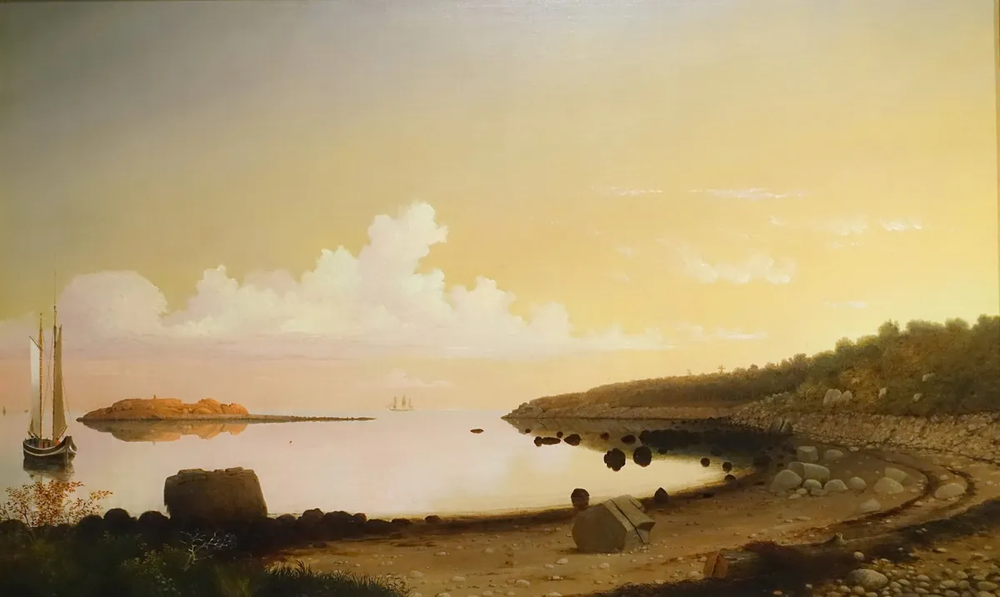

Site 5 of 9 · Fitz Henry Lane
Norman's Woe, the western shore
Area documented · spot approximate

- Standing point
- shore north of the rock (42.58434, -70.69275)
- Looking at
- Norman's Woe Rock
- Direction of view
- S, 183° from true north
- Distance to subject
- 500 m (1,641 ft)
- The painter's light
- sunset: about 7:28 p.m. on August 25, 2027
Where they stood
Lane “drew the rock from the shore looking to the south” in 1861, on a drawing gridded for transfer; the boat drifts in the cove just north of the rock. The catalogue includes a viewpoint chart.168 The marker is the nearest shore point north of the cove (MassGIS).
The light
A newspaper in 1862 called it “a sunset scene”: the sky moves from purple at upper left to coppery yellow at right, the light of early twilight.168 Facing south, the setting sun is off to the right (west), which is where Lane put his brightest sky.
Paint it today
- The rock lies a few hundred feet offshore and can be reached over the rocks at low tide; at high tide it is an island.168 Mind the tide: the harbor range averages nearly 9 feet.162
- OpenStreetMap shows a Normans Woe Wildlife Sanctuary along this shore; we did not verify its access rules.161
- Go for the last half hour before sunset, and keep the sky warm on the right and cool at upper left, as Lane did.